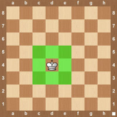

King


The king is the piece with a cross at the top. This may not be the most powerful piece in chess, but it certainly is the most important. If you lose your king, you have lost the game. At the beginning of the game you want to make sure to protect your king. Later in the game, the king can become a very powerful ally in your offense so be prepared to use it. The king can move one square in any direction. It can’t jump over material so at the start of a chess game there are no legal moves for the king to make since it is surrounded by other pieces. When a king moves to a square you will see something like Ke5. The K represents the king and e5 represents the square it is moving to. If there was a piece on e5 that the king is capturing then you will see the notation written Kxe5. The x shows that a piece was captured. The one limitation the king has when moving is that it can’t move to a square that is being attacked by an opponent’s pieces.
How the King Moves
